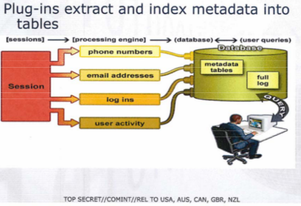
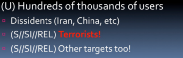
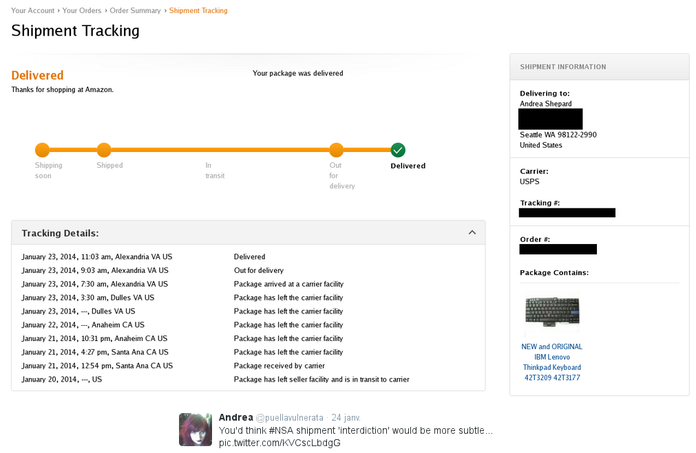

| Countries | Agencies | |
| United-States | NSA | REL TO USA |
| United Kingdom | GCHQ | REL TO GBR |
| New-Zealand | GCSB | REL TO NZL |
| Canada | CSEC | REL TO CAN |
| Australia | ASD | REL TO AUS |
Five Eyes + Denmark + France + Netherlands + Norway
Nine Eyes + Germany + Belgium + Italy + Spain + Sweden (FRA).
"Collection of communications on fiber cables and infrastructure as data flows past." : internet content, telephony content, metadata, voice, fax, ...
The NSA documents state that under RAMPART-A, foreign partners “provide access to cables and host U.S. equipment.” This allows the agency to covertly tap into “congestion points around the world” where it says it can intercept the content of phone calls, faxes, e-mails, internet chats, data from virtual private networks, and calls made using Voice over IP software like Skype.
Collection directly from the servers of these U.S. Service Providers: Microsoft (+Skype), Yahoo, Google (+YouTube), Facebook, PalTalk, AOL, Apple : emails, chat/video voice, videos, photos, stored data, VoIP, file transfers, video conferencing, notifications of target activity (logins...), online social networking details + special requests
The NSA’s acquisitions directorate sends millions of records every day from internal Yahoo and Google networks to data warehouses at the agency’s headquarters at Fort Meade, Md. In the preceding 30 days, the report said, field collectors had processed and sent back 181,280,466 new records — including “metadata,” which would indicate who sent or received e-mails and when, as well as content such as text, audio and video.
"Fuck these guys"
Brandon Downey (Network Security Engineer - Google)
joint interagency effort between CIA and NSA. The mission lasted 6 months (during which 43 flights were flown) and mapped the Wi-Fi fingerprint of nearly every major town in Yemen
SOMALGET is a cutting-edge tool that enables the NSA to vacuum up and store the actual content of every conversation in an entire country.
targeted website monitoring using passive : The agency logged data showing hundreds of users from around the world, including the United States [...]. The IP addresses collected by GCHQ are used to identify individual computers that connect to the Internet, and can be traced back to specific people if the IP address has not been masked using an anonymity service. If WikiLeaks or other news organizations were receiving submissions from sources through a public dropbox on their website, a system like ANTICRISIS GIRL could potentially be used to help track them down.
DNI exploitation system/analytic framework -- perform strong (e.g. email) and soft (content) selection -- provides real-time target activity
email addresses, extracted files, full log, HTTP parser, phone number, user activity, using encryption ...
In 2008, during 6 months, OPTIC NERVE gathered one photo every 5 seconds from more than 1.8 million people using webcams in Yahoo chats
Including automatic facial recognition tests
A GCHQ's presentation was talking with interest of the ability to collect the kinect data traffic (from XBox 360)...
NSA spied also some browsing sessions on porn sites to fight terrorism (--> if you are a jihadist).
To trick targets into visiting a FOXACID server, the NSA relies on its secret partnerships with US telecoms companies. As part of the TURMOIL system, the NSA places secret nodes, codenamed TAO nodes, at key places on the Internet backbone for a man-in-the-middle (or a man-in-the-side). The NSA uses this active implants to run packet injection attack, which surreptitiously redirects the target to the FOXACID server.
| Q-BISCUIT | redirection based on keyword + HTML cookies values, |
| Q-BOT | IRC botnet hijacking |
| Q-BOT2 | Q-BOT + Q-BISCUIT, |
| Q-COPPER | file download/upload disruption, |
| Q-COOKIE | |
| Q-DNS | DNS hijacking, caching nameservers |
| Q-MUSH | virtual HUFFMUSH - targeted spam exploitation |
| Q-INSERT | HTML redirection, |
| Q-NATION | First malware injected into targets' computers (VALIDATOR, COMMANDEER) |
| Q-SKY | HTML/TCP reset |
| Q-SPIM | instant messaging (msn, XMPP...) |
| Q-SQUEEL | injection into MySQL persistent DB connections |
| Q-SQUIRREL | truly covert infrastructure, be any IP in the world. |
| Q-THEORY |
Why ?
→ QUANTUM it ! /o/
Split successful and uncessful connections
→ QUANTUM it ! /o/
Same method (cisco, juniper, huawei) :
Do a regular checksum on the installation.
"still the King of high secure, low latency Internet Anonymity. There are no contenders for the throne in waiting"
MJOLNIR is a modification of Tor, and it is ideally indistinguishable from an original Tor client. As such, it should appear identical to Tor in traffic. To ease this process, we used original Tor functions whenever possible. However, its main purpose is to provide the programmer with greater control over all aspects of Tor. In the normal Tor client, almost all servers in all circuits chosen randomly. Using MJOLNIR , the programmer can build circuits one server at a time, with no limit to the number of servers in the circuit.
we will never be able to de-anonymize all Tor users all the time. with manual analysis we can de-anonymize a very small fraction of Tor users [...]
FOXACID : identifies TOR users on the Internet and then executes an attack against their Firefox web browser.
EGOTISTISCALGIRAFFE: Fingerprinting Tor (hello TorButton!), Exploiting Tor : ERRONEOUSINGENUITY (ERIN) + EGOSTICALGOAT = firefox exploit

Jacob "I will blow your fuckin' mind" Appelbaum (ioerror) : "To protect and infect - part 2 -- @30C3"
« Encryption works. Properly implemented strong crypto systems are one of the few things that you can rely on. Unfortunately, endpoint security is so terrifically weak that NSA can frequently find ways around it. »
There are many projects as LibreSSL, OpenSSH, Tor or Caliopen which need your help for development or donations
There are many associations, as La Quadrature du Net or EFF which cannot do everything alone.